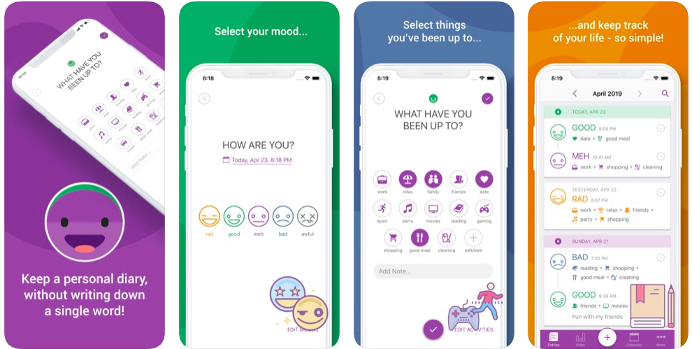

laptop_mac
Looking to keep a digital journal? Try these apps!
These are the best apps for keeping a digital journal of your life as it happens.
○ Day One
○ Momento
○ Moodnotes
○ Grid Diary
○ Daylio
Day One
Momento
Moodnotes
Grid Diary
Daylio

Top